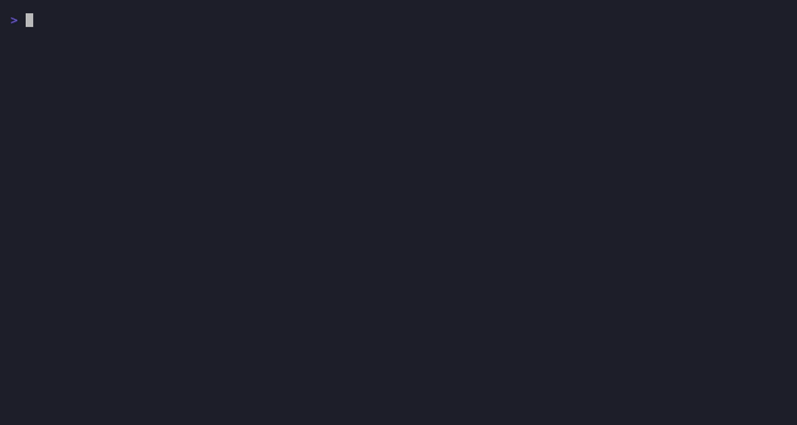

放心讓 Claude Code、Codex 全自動火力全開——最壞情況也只是容器內亂砍，主機檔案、登入憑證、其他專案毫髮無傷。 Let Claude Code or Codex run on full auto, worry-free. Worst case, the mess stays inside the container — your host files, credentials and other projects stay untouched.
# 日常：一個指令，秒進沙盒# daily driver: one command, instant sandbox $ agent-sandbox
每次啟動都是全新的 --rm 容器，退出即消失；你的程式碼留在 host 專案夾。Every session is a fresh --rm container, gone on exit; your code stays in the host project folder.
預設 2GB RAM、2 CPU、512 task 上限（可逐專案放寬）；剝奪全部 Linux capabilities、防 SUID 提權。失控的 agent 拖不垮你的機器。2GB RAM, 2 CPUs, 512-task cap by default (raise it per project); all Linux capabilities dropped, no privilege escalation. A runaway agent can't take down your machine.
日常啟動秒起、零互動；--upgrade 一鍵把工具鏈刷到最新並自動留 semver 快照。Daily startup is instant and prompt-free; --upgrade refreshes the whole toolchain and auto-tags a semver snapshot.
內建 Claude Code 與 Codex base，一個旗標切換；add-on（如 OpenSpec）可疊在任何 base 上。Claude Code and Codex bases built in, one flag to switch; add-ons (like OpenSpec) stack on any base.
image 不預裝語言——由 mise 按各專案 mise.toml 安裝，快取跨專案共用，同版本第二次秒用。No languages baked into the image — mise installs per-project from mise.toml into a shared cache; same version is instant the second time.
agent 的登入態掛載自 host——容器用完就丟，但不用一直重新登入。Agent credentials are mounted from the host — containers are disposable, your login isn't.
--identity ops 切換一整組獨立憑證（含 SSH 金鑰）——開發身分不必帶長期金鑰，維運身分不必裝額外工具，風險互不牽連。--identity ops switches to a fully separate credential set (including SSH keys) — a dev identity never needs long-lived keys, an ops identity never needs extra tooling, so the blast radius stays contained.
# 需求：macOS / Linux + Podman（Windows 走 WSL2）# requires macOS / Linux + Podman (Windows via WSL2) $ git clone https://github.com/ray4f55/agent-sandbox.git $ cd agent-sandbox && ./init.sh --apply # 一次性設定（逐項徵詢）# one-time setup (asks before each step) $ cd ~/your-project $ agent-sandbox --upgrade # 首次：建 image（自動留版號快照）# first time: build the image (auto version snapshot) $ agent-sandbox # 之後天天用這個：秒進沙盒# every day after: instant sandbox
完整文件（設計取捨、多變體、額外掛載、升級與回滾）都在 GitHub README。 Full docs (design rationale, variants, extra mounts, upgrades & rollback) live in the GitHub README.

--upgrade 自動留版號快照，隨時 rollback 回舊版
Upgrades: --upgrade auto-tags a snapshot — roll back anytime
不想本機 build？CI 自動發佈多架構（arm64 + amd64）image 到 GHCR： Don't want to build locally? CI publishes multi-arch (arm64 + amd64) images to GHCR:
$ podman pull ghcr.io/ray4f55/agent-sandbox-claude:latest